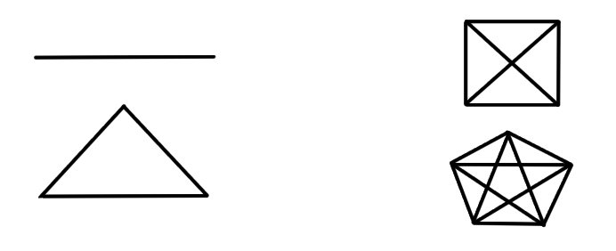

Probability, Geometry, and Magic
Consider a few shapes! A line, a triangle, a square. The square is the first of these where all points are not connected unless we add extra lines. For a square, this will be two extra lines, which are also called "diagonals", whatever that means.
The shape with five sides is a pentagon. It has five lines within, five diagonals necessary to make sure each dot has a connection to every other dot.
You might notice that at first we had one line, and that then because we had two points already we needed two new lines for the triangle, and that then because we had three points we needed three new lines for the square to have every dot connected, and so on...
You might also notice that this is just like the triangular numbers. One, three, six, 10...
You might also be shocked to find out this matter of "How many ways can you connect the dots" is not only related to probability, such as: "If there are two of you, there are one times two ways a meeting can occur; If there are three, there are three possinble connections, and two possible ways, so six possible meetings; And so on" - but also equations.
This can be explained by the fact that probability is really just a term for how many ways something can occur. Probability and possibility do not describe the realistic factors occuring, but only the probabilities that have much more momentum and power behind their actually happening. A man falling off a building - coincidentally Einstein's happiest thought - which helped him discover relativity, because the man falling would feel as if the world was moving and he was stationary - is not guaranteed.
For all we know, he could... There is a possibility that he could teleport to Mars. The probability is zero because of how many particles would have to randomly find their way to the same exact place in the universe by accident, but it is still theoretically a possibility.